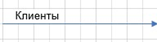

Описание моделей с использованием нотаций IDEF0 и ETC
Часть 1. Построение модели деятельности предприятия. Нотация idef0
Цель работы:
- Знакомство с графической нотацией формализации и описания бизнес-процессов IDEF0. Знакомство c понятием функциональной модели AS-IS («как есть»).
- Описание и построение функциональной модели AS-IS выбранной предметной области с применением нотации IDEF0.
Постановка задачи
Задана предметная область – ООО «Мебельная фабрика Восточная». Предприятие занимается серийным производством качественной мебели эконом-класса. Производство мебели осуществляется как на заказ для партнеров компании, так и для продажи розничным покупателям.
Дублирую: необходимо для заданной предметной области «Мебельная фабрика Восточная» построить бизнес-процессы в нотации IDEF0.
Необходимо создать файл ms visio и там выполнять практическое задание.
В ms visio есть готовые объекты нотации IDEFO, используйте их.
Файл необходимо сохранить в личной папке, в папке «МДК 05.01», в папке «Практика 11».
Описание основных процессов деятельности мебельной фабрики.
Основными процессами фабрики являются: работа с заказчиками, работа с поставщиками по обеспечению основной деятельности, производственные процессы, реализация продукции. На этапе поступления заказа с клиентом работает менеджер по продажам. Первоначально согласовываются условия выполнения заказа, в случае несогласования условий проводятся дополнительные переговоры, которые могут завершиться согласованием условий заказа и подписанием договора либо несогласованием условий заказа. В случае подписания договора формируется заказ на производство, для которого выявляется наличие необходимых материалов на складе. При необходимости формируется заявка поставщику, на основании которой оформляется товарная накладная. Проверяется соответствие доставленных материалов товарной накладной. Проверенные материалы принимаются к учету. В случае наличия материалов на складе происходит их резервирование под полученный от клиента заказ. Ключевым процессом является планирование программы производства. Планирование осуществляется на базе анализа заказов. Составляется план производства изделий по сменам, на основании плана разрабатываются задания на производство. Материалы списываются по факту расходования. Производство мебели осуществляется по утвержденным стандартам. По окончании смены рабочий формирует отчет по производству за смену.
Автоматизированная система необходима предприятию для осуществления контроля производственных процессов, сокращения временных затрат на оформление документации по производству.
Большая часть информации хранится и передается в виде бумажных документов (договоры, документы по производству и т. д.). Деятельность предприятия автоматизирована не полностью, на предприятии достаточно большой объем оформляемой документации, что замедляет работу административного персонала.
Необходимо для заданной предметной области «Мебельная фабрика Восточная» построить бизнес-процессы в нотации IDEF0.
Указания
Business Studio – это система бизнес-моделирования, позволяющая спроектировать и оптимизировать бизнес-процессы предприятия, что, в свою очередь, способствует повышению эффективности работы предприятия в целом. Данная система распространяется бесплатно для некоммерческого использования. Для работы с программным продуктом Business Studio предварительно необходимо установить Microsoft Visio. Business Studio можно скачать с официального сайта компании-разработчика www.businessstudio.ru
Модель AS-IS – это модель «как есть», т. е. модель уже существующего процесса/функции. Анализ процессов является обязательной частью любого проекта создания или развития системы. Построение функциональной модели AS-IS позволяет четко зафиксировать, какие процессы осуществляются на предприятии, какие информационные объекты используются при выполнении функций различного уровня детализации.
Модель AS-IS показывает зоны ответственности исполнителей процесса и ход самого процесса («кто что сделал», как взаимосвязаны этапы между собой и как каждый этап влияет на конечный результат). Функциональная модель AS-IS является отправной точкой для анализа потребностей предприятия, выявления проблем и «узких» мест, разработки проекта совершенствования деловых процессов. Анализ функциональной модели AS-IS позволяет понять, в чем заключается проблема, в чем будут состоять преимущества новых процессов и каким изменениям подвергнется существующая структура организации процесса в результате оптимизации.
IDEF0 – нотация графического моделирования, используемая для создания функциональной модели, отображающей структуру и функции системы, а также потоки информации и материальных объектов, связывающих эти функции. К ее особенностям можно отнести:
- использование контекстной диаграммы;
- поддержку декомпозиции;
- доминирование;
- выделение четырех типов стрелок.
Контекстная диаграмма – это верхняя диаграмма, на которой объект моделирования представлен единственным блоком с граничными стрелками. Эта диаграмма называется A-0. Стрелки на этой диаграмме отображают связи объекта моделирования с окружающей средой. Диаграмма A-0 устанавливает область моделирования и ее границу.
Контекстная диаграмма рассматриваемой предметной области «Мебельная фабрика Восточная» представлена на рис. 1.1:
Поддержка декомпозиции – это принцип проектирования, согласно которому нотация IDEF0 детализирует последовательную декомпозицию процесса до требуемого уровня детализации. Дочерняя диаграмма, создаваемая при декомпозиции, охватывает ту же область, что и родительский процесс, но описывает ее более подробно.
Суть принципа доминирования заключается в том, что блоки модели IDEF0 на неконтекстной диаграмме должны располагаться по диагонали – от левого верхнего угла диаграммы до правого нижнего в порядке присвоенных номеров. Блоки на диаграмме, расположенные вверху слева, «доминируют» над блоками, расположенными внизу справа. Под «доминированием» понимается влияние, которое блок оказывает на другие блоки диаграммы.
Используются следующие типы стрелок: «вход», «выход», «механизм», «управление». «Входы» преобразуются или расходуются процессом, чтобы создать то, что появится на выходе. «Управления» определяют условия, необходимые процессу, чтобы получить правильный результат на выход. «Выходы» – данные или материальные объекты, полученные в ходе выполнения процесса. «Механизмы» идентифицируют средства, поддерживающие выполнение процесса.
Элементы графической нотации IDEF0 представлены в табл. 1.1.
| Номер п/п | Название элемента | Графическое обозначение | Описание элемента |
|---|---|---|---|
| 1 | Процесс | Обозначается прямоугольным блоком. Внутри каждого блока помещаются его имя и номер. Имя должно быть активным глаголом, глагольным оборотом или отглагольным существительным. Номер блока размещается в правом нижнем углу. Номера блоков используются для идентификации на диаграмме и в соответствующем тексте | |
| 2 | Стрелка |  |
Стрелки обозначают входящие и исходящие из процесса объекты (данные). Каждая сторона функционального блока имеет стандартное значение с точки зрения связи «блок – стрелка». В свою очередь, сторона блока, к которой присоединена стрелка, однозначно определяет ее роль. Стрелки, входящие в левую сторону блока, – «входы».
Стрелки, входящие в блок сверху, – «управления». Стрелки, покидающие процесс справа, – «выходы», т. е. данные или материальные объекты, произведенные процессом. Стрелки, подключенные к нижней стороне блока, представляют механизмы |
| 3 | Туннелированная стрелка | Туннелированные стрелки означают, что данные, передаваемые с помощью этих стрелок, не рассматриваются на родительской диаграмме и/или на дочерней диаграмме. Стрелка, помещенная в туннель там, где она присоединяется к блоку, означает, что данные, выраженные этой стрелкой, не обязательны на следующем уровне декомпозиции. Стрелка, помещаемая в туннель на свободном конце, означает, что выраженные ею данные отсутствуют на родительской диаграмме | |
| 4 | Внешняя ссылка | Элемент обозначает место, сущность или субъект, которые находятся за границами моделируемой системы. Внешние ссылки используются для обозначения источника или приемника стрелки вне модели. На диаграммах внешняя ссылка изображается в виде квадрата, рядом с которым показано наименование внешней ссылки | |
| 5 | Сноска | Выносной элемент, предназначенный для комментариев |
Согласно представленному выше описанию предметной области, можно выделить основные процессы, управляющие процессы, а также процессы, необходимые для обеспечения основной деятельности предприятия. В примере сделан акцент на основные процессы мебельной фабрики, среди которых выделяются работа с клиентами, обеспечение основной деятельности, производственные процессы, реализация продукции. Отправной точкой процесса можно считать документ «Заказы покупателей», а также необходимые для выполнения заказов ресурсы (материалы) и наличие персонала. Для разработки программы планирования необходимо определить затраты на производство и сформировать документы о резервировании материалов.
На программу планирования производства также влияют отчетные показатели по изготовлению продукции. На основе разработанной программы планирования производства утверждается задание на производство.
Декомпозиция контекстной диаграммы до третьего уровня детализации бизнес-процессов представлена на рис. 1.2, 1.3, 1.4.
Таким образом, нотация IDEF0 предполагает построение иерархической системы диаграмм – единичных описаний фрагментов системы.
Часть 2. ПОСТРОЕНИЕ МОДЕЛИ ДЕЯТЕЛЬНОСТИ ПРЕДПРИЯТИЯ. НОТАЦИИ «ПРОЦЕСС» И «ПРОЦЕДУРА»
Цель работы:
- Знакомство с графическими нотациями формализации и описания бизнес-процессов «Процесс», «Процедура».
- Доработка функциональной модели бизнес-процессов выбранной предметной области в нотациях «Процесс» и «Процедура».
Построение модели происходит также в MS Visio.
Постановка задачи
Для заданной предметной области «Мебельная фабрика Восточная» (описание см. в лаб. работе № 1) построить бизнес-процессы в нотациях «Процесс» и «Процедура».
Указания
Нотации «Процесс» и «Процедура» используются для представления алгоритма (сценария) выполнения бизнес-процесса. Они позволяют задать причинно-следственные связи и временную последовательность выполнения действий процесса. Эти нотации поддерживают декомпозицию на подпроцессы, так же как и нотация IDEF0.
Различие между нотациями «Процесс» и «Процедура» состоит в том, что дополнительно к графическим элементам, применяемым в нотации «Процесс», в нотации «Процедура» используются дорожки (Swim Lanes), обозначающие исполнителей действий процесса. Это позволяет повысить наглядность диаграммы.
Элементы графических нотаций «Процесс» и «Процедура» представлены в табл. 2.1.
| Номер п/п | Название элемента | Графическое обозначение | Описание элемента |
|---|---|---|---|
| 1 | Действие | Обозначается с помощью прямоугольного блока. Внутри блока помещается название действия. Временная последовательность выполнения действий задается расположением действий на диаграмме процесса в нотации «Процесс»/«Процедура» сверху вниз | |
| 2 | Решение | Обозначает ветвление, после которого процесс может пойти по одному альтернативному направлению в зависимости от некоторого условия | |
| 3 | Связь предшествования | Стрелки элемента «Связь предшествования» обозначают передачу управления от одного действия к другому, т. е. предыдущее действие должно закончиться прежде, чем начнется следующее. Стрелка, запускающая выполнение действия, изображается входящей в действие сверху. Стрелка, обозначающая передачу управления другому (другим) действию, изображается выходящей из действия снизу | |
| 4 | Поток объектов | Стрелки элемента «Поток объектов» используются в случаях, когда необходимо показать, что из одного действия объекты передаются в другое, при этом первое действие не запускает выполнения второго. «Поток объектов» обозначается стрелкой с двумя треугольниками на конце | |
| 5 | Дорожки (используется только в нотации «Процедура») | Дорожки предназначены для отображения организационных единиц (должности, подразделения, роли, внешнего субъекта) – исполнителей действий процесса | |
| 6 | Событие | События отображают стартовые точки процесса в нотациях «Процесс»/ «Процедура», указывающие на начало процесса, и конечные точки, которыми заканчивается процесс |
Опираясь на представленное выше описание предметной области, необходимо более детально рассмотреть бизнес-процессы «Работа с клиентами» и «Разработка программы планирования производства».
Начальным событием процесса «Работа с клиентами» является поступление заказа от покупателя.
Можно выделить трех исполнителей:
- менеджер по продажам;
- экономист;
- сам заказчик;
Менеджер по продажам фиксирует данные о клиенте (если он новый) и самом заказе, экономист рассчитывает сумму и сроки выполнения заказа, после чего данные условия согласовываются с заказчиком.
В случае если условия заказа согласованы, менеджер по продажам готовит договор, который подписывается двумя сторонами, на основании чего формируется заказ на производство.
Процесс «Разработка программы планирования производства» предполагает анализ всех изделий по заказам на производство, который осуществляет менеджер по производству.
Разработка программы планирования проводится на основании информации об изделиях и материалах, необходимых для выполнения заказа.
План производства по сменам утверждается заместителем директора по производству, если нет замечаний.
На основании утвержденного плана формируются задания на производство.
По мере выполнения заданий на производство (непосредственного изготовления продукции) бухгалтер-экономист списывает использованные по факту производства материалы.
Диаграммы процессов «Работа с клиентами» и «Разработка программы планирования производства» в нотации «Процедура» представлены на рис. 2.1 и 2.2.
Таким образом, следует отметить, что нотации «Процесс» и «Процедура» целесообразно использовать при моделировании процессов нижнего (операционного) уровня.
Часть 3. нотации IDEF0 + и выделить два из них.
Цель работы:
- Прикрепить скриншот основного интерфейса каждого из программы;
-
Сравнить их:
- по возможностям, предоставляемым пользователю;
- по доступности (свободно-распространяемое или нет);
- по недостаткам.
- Сохранить все это в документе Word под названием "Практика 11.3"
Требования по форматированию - (как обычно):
- Times New Roman;
- 14 размер;
- 1.5 междустрочный интервал;
- Выравнивание основного текста - по ширине
Часть 4. ПОСТРОЕНИЕ МОДЕЛИ ДЕЯТЕЛЬНОСТИ ПРЕДПРИЯТИЯ. НОТАЦИЯ EPC
Цель работы:
- Знакомство с графической нотацией формализации и описания бизнес-процессов EPC.
- Доработка функциональной модели бизнес-процессов выбранной предметной области в нотации EPC.
Постановка задачи
Для заданной предметной области «Мебельная фабрика Восточная» (описание см. в лаб. работе № 1) построить бизнес-процессы в нотации EPC.
Указания
Диаграмма процесса в нотации EPC представляет собой упорядоченную комбинацию событий и функций. Для каждой функции могут быть определены начальные и конечные события, участники, исполнители, материальные и документальные потоки, сопровождающие ее, а также может быть проведена декомпозиция на более низкие уровни.
Основные элементы графической нотации EPC представлены в табл. 3.1.
| Номер п/п | Название элемента | Графическое обозначение | Описание элемента |
|---|---|---|---|
| 1 | Процесс (функция) | Блок представляет собой функцию – процесс, действие или набор действий, выполняемых над исходным объектом с целью получения заданного результата. Внутри блока помещается наименование функции | |
| 2 | Событие | «Событие» – состояние, которое является существенным для целей управления бизнесом и оказывает влияние или контролирует дальнейшее развитие одного или более бизнес-процессов. Элемент отображает события, активизирующие функции или порождаемые функциями. Внутри блока помещается наименование события | |
| 3 | Операторы AND, XOR, OR | Используются для обозначения слияния/ветвления как функций, так и событий | |
| 4 | Интерфейс процесса | Элемент, обозначающий внешний (по отношению к текущей диаграмме) процесс или функцию. Используется для указания взаимосвязи процессов: 1) обозначает предыдущий или следующий процесс по отношению к диаграмме рассматриваемого процесса; 2) обозначает процесс, откуда поступил или куда передается объект | |
| 5 | Субъект | Используется для отображения на диаграмме организационных единиц (должности, подразделения, роли, внешнего субъекта) – исполнителей, владельцев или участников функций | |
| 6 | Бумажный документ | Используется для отображения на диаграмме бумажных документов, сопровождающих выполнение функции | |
| 7 | Электронный документ | Используется для отображения на диаграмме электронных документов, сопровождающих выполнение функции | |
| 8 | Информация |  |
Используется для отображения на диаграмме информационных потоков, сопровождающих выполнение функции |
Производство мебели осуществляется по утвержденным стандартам (основные задачи: раскрой сухих пиломатериалов, сверление, выполнение облицовки, сборка изделия). По окончании смены рабочий формирует отчет по производству за смену.
Диаграмма процесса «Изготовление продукции» в нотации EPC представлена на рис. 3.1.
Следует отметить, что нотация EPC, так же, как и нотации «Процесс» и «Процедура», применяется при моделировании процессов нижнего (операционного) уровня.
Часть 5. Описание и построение функциональной модели вашего варианта
Описать и построить функциональную модель ВАШЕГО варианта, который вы выбрали еще во второй практике:
- С использованием графической нотации IDEF0;
- С использованием нотации EPC;
Далее приводится таблица графических символов, используемых в нотациях IDEF0 и EPC
Назначение графических символов, используемых в нотации IDEF0
| Номер п/п | Название элемента | Графическое обозначение | Описание элемента |
|---|---|---|---|
| 1 | Процесс | Обозначается прямоугольным блоком. Внутри каждого блока помещаются его имя и номер. Имя должно быть активным глаголом, глагольным оборотом или отглагольным существительным. Номер блока размещается в правом нижнем углу. Номера блоков используются для идентификации на диаграмме и в соответствующем тексте | |
| 2 | Стрелка |
Стрелки обозначают входящие и исходящие из процесса объекты (данные). Каждая сторона функционального блока имеет стандартное значение с точки зрения связи «блок – стрелка». В свою очередь, сторона блока, к которой присоединена стрелка, однозначно определяет ее роль. Стрелки, входящие в левую сторону блока, – «входы».
Стрелки, входящие в блок сверху, – «управления». Стрелки, покидающие процесс справа, – «выходы», т. е. данные или материальные объекты, произведенные процессом. Стрелки, подключенные к нижней стороне блока, представляют механизмы |
|
| 3 | Туннелированная стрелка | Туннелированные стрелки означают, что данные, передаваемые с помощью этих стрелок, не рассматриваются на родительской диаграмме и/или на дочерней диаграмме. Стрелка, помещенная в туннель там, где она присоединяется к блоку, означает, что данные, выраженные этой стрелкой, не обязательны на следующем уровне декомпозиции. Стрелка, помещаемая в туннель на свободном конце, означает, что выраженные ею данные отсутствуют на родительской диаграмме | |
| 4 | Внешняя ссылка | Элемент обозначает место, сущность или субъект, которые находятся за границами моделируемой системы. Внешние ссылки используются для обозначения источника или приемника стрелки вне модели. На диаграммах внешняя ссылка изображается в виде квадрата, рядом с которым показано наименование внешней ссылки | |
| 5 | Сноска | Выносной элемент, предназначенный для комментариев |
Назначение графических символов, используемых в нотации EPC
| Номер п/п | Название элемента | Графическое обозначение | Описание элемента |
|---|---|---|---|
| 1 | Процесс (функция) | Блок представляет собой функцию – процесс, действие или набор действий, выполняемых над исходным объектом с целью получения заданного результата. Внутри блока помещается наименование функции | |
| 2 | Событие | «Событие» – состояние, которое является существенным для целей управления бизнесом и оказывает влияние или контролирует дальнейшее развитие одного или более бизнес-процессов. Элемент отображает события, активизирующие функции или порождаемые функциями. Внутри блока помещается наименование события | |
| 3 | Операторы AND, XOR, OR | Используются для обозначения слияния/ветвления как функций, так и событий | |
| 4 | Интерфейс процесса | Элемент, обозначающий внешний (по отношению к текущей диаграмме) процесс или функцию. Используется для указания взаимосвязи процессов: 1) обозначает предыдущий или следующий процесс по отношению к диаграмме рассматриваемого процесса; 2) обозначает процесс, откуда поступил или куда передается объект | |
| 5 | Субъект | Используется для отображения на диаграмме организационных единиц (должности, подразделения, роли, внешнего субъекта) – исполнителей, владельцев или участников функций | |
| 6 | Бумажный документ | Используется для отображения на диаграмме бумажных документов, сопровождающих выполнение функции | |
| 7 | Электронный документ | Используется для отображения на диаграмме электронных документов, сопровождающих выполнение функции | |
| 8 | Информация | |
Используется для отображения на диаграмме информационных потоков, сопровождающих выполнение функции |